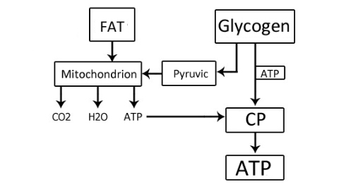

We keep going deeper into the ADVANCED-block topics, giving you more information about how things work in our body. We hope the infoposts are not too hard, but if something does not click the first time, we recommend reading it. And today we will talk about something that worries a lot of our participants.
It should be said that the exact mechanism of muscle growth is unknown: scientists still have not agreed on whether new muscle fibers appear, or the ones you already have split and thicken, and how strongly all of this depends on genetics. But you can pick out 4 factors that are needed for muscle-mass growth (without them growth will go poorly):
1. A rise in the concentration of anabolic hormones in the blood.
2. A rise in the concentration of free creatine in the muscles.
3. A rise in the concentration of hydrogen ions in the muscles.
4. A reserve of amino acids in the cell.
We use the word "factors" because the cause-and-effect link between them and muscle growth is not fully studied. Experiments have shown that they work, but why and how exactly is still an open question.
1. A rise in the concentration of anabolic hormones in the blood
FYI:
Anabolism is the set of chemical processes that make up one side of metabolism in the body, aimed at forming cells and tissues.
Anabolic hormones are hormones released by the body that serve as a signal for anabolism to start.
Anabolic hormones are hormones released by the body that serve as a signal for anabolism to start.
Of the four factors we look at today, this one is the most important, because it is the one that starts the synthesis of myofibrils (muscle fibers) in the cell. The concentration of anabolic hormones in the blood rises under physiological stress reached through failure reps in a set. During training the hormones go into the cell and do not come back out, so the larger the training volume, the more hormones will be inside the cell.
Under the action of hormones, various structures form in the muscle fibers that take part in synthesizing protein molecules. It should be noted that anabolic hormones are fully used up inside the cell during protein synthesis over the course of several days.
How do you get there? Give the body a load in training that is stress for it!
What is stress?
Stress here means a level of load in training that your body was not ready for. If you take your current level of fitness as the starting point, then the farther you move away from it toward a higher load, the more stress the body will feel.
If you regularly do 30 pull-ups in training (5 reps in 6 sets), the body will get used to that load. Keeping all other training conditions the same (including tempo, type of pull-up, and so on), if at the next session you do more than 30 pull-ups, that will be stress for the body. 40, 35, or even 31 pull-ups — it will still be stress. Of course 35 reps will give more stress, but 31 will be stress too. Because that load was not there before. And if you do 30 or fewer reps, there will be no stress. There is a thing called adaptation (getting used to it), which your body loves to do and is one of the best in the world at. So what used to be stress fairly quickly stops being stress as you adapt.
As Lewis Carroll wrote: "It takes all the running you can do, to keep in the same place. If you want to get somewhere else, you must run at least twice as fast as that!"
If you regularly do 30 pull-ups in training (5 reps in 6 sets), the body will get used to that load. Keeping all other training conditions the same (including tempo, type of pull-up, and so on), if at the next session you do more than 30 pull-ups, that will be stress for the body. 40, 35, or even 31 pull-ups — it will still be stress. Of course 35 reps will give more stress, but 31 will be stress too. Because that load was not there before. And if you do 30 or fewer reps, there will be no stress. There is a thing called adaptation (getting used to it), which your body loves to do and is one of the best in the world at. So what used to be stress fairly quickly stops being stress as you adapt.
As Lewis Carroll wrote: "It takes all the running you can do, to keep in the same place. If you want to get somewhere else, you must run at least twice as fast as that!"
2. A rise in the concentration of free creatine in the muscles
Accumulation of free creatine in the sarcoplasm (the non-contractile part of the muscle) serves as a criterion that metabolism in the cell is intensifying.

Creatine phosphate (CrP) transports energy from the mitochondria to the myofibrils in oxidative muscle fibers (OMF) and from sarcoplasmic ATP to myofibrillar ATP in glycolytic muscle fibers (GMF). In the same way it also transports energy into the cell nucleus, to nuclear ATP. If a muscle fiber is activated, ATP is also spent in the nucleus, and to resynthesize ATP you need to get CrP from outside, because there are no other energy sources for ATP resynthesis in the nucleus (there are no mitochondria there).
Although all organelles of the body are regularly renewed (that is, this process is always going on), as a result of training that activates the muscle fiber, free creatine accumulates in the sarcoplasm. That means active metabolic and plastic processes are underway. In the nucleoli, CrP gives up energy for ATP resynthesis, and free creatine moves toward the mitochondria, where it is resynthesized into CrP again. That way part of the CrP starts taking part in supplying the cell nucleus with energy, significantly activating all the plastic processes happening in it.
How do you get there? Give the body a load in training that is stress for it!
3. A rise in the concentration of hydrogen ions in the muscles
A rise in the concentration of hydrogen ions increases the size of the pores in the membranes, which makes it easier for hormones to enter the cell, activates enzymes, and makes it easier for hormones to reach hereditary information (in DNA molecules).
During exercises in a dynamic mode, myofibril growth in OMF does not happen (although they take part in the work too, just like GMF), because only three of the four muscle-growth factors are activated in them. Because of the large number of mitochondria and the uninterrupted delivery of oxygen with the blood during the exercise, hydrogen ions do not accumulate in the sarcoplasm of OMF. Accordingly, hormones cannot enter the cell, and anabolic processes do not unfold. Hydrogen ions activate all processes in the cell. The cell is active, nerve impulses run through it, and those impulses make the myosatellite cells start forming new nuclei. At a high impulse frequency, nuclei for fast muscle fibers are created; at a low one, nuclei for slow muscle fibers.
How do you get there? Do sets to muscular failure.
4. A reserve of amino acids in the cell
The last factor on today's list, but definitely not the last in importance, is having the needed amount of amino acids in the cell. Amino acids are the building bricks from which proteins are built, and therefore muscles. This factor is not tied to the training process, but to providing proper, complete nutrition.
Amino acids accumulate in the cell gradually as an amino-acid pool, so there is no need to raise the amino-acid content in the blood right before or during the exercise. Protein synthesis, in turn, goes on for about a day after a strength session, so you need to give the body the needed amount of protein over the few days after training. By the way, the raised metabolism for 2–3 days after a strength session also points to that indirectly.
How do you get there? Provide the needed nutrition the whole time.
Additionally
Building new myofibrils continues for 7–15 days, but ribosomes (the most important non-membrane organelle of all living cells, used to biosynthesize protein from amino acids) accumulate most actively during training and in the first hours after it. Hydrogen ions do their job both during training and in the hour after it. Hormones work, decoding information from DNA, for another 2–3 days, but not as intensively as during the session, when that process is also activated by a raised concentration of free creatine.
Sources
1. Seluyanov V.N. Factors of muscle growth